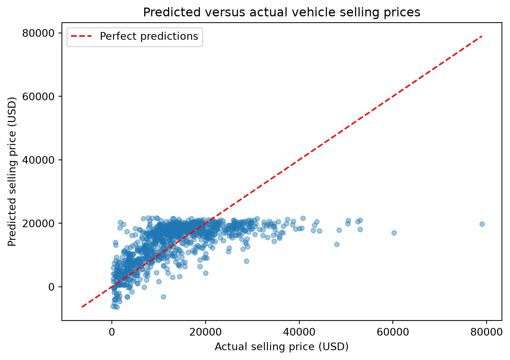

from pathlib import Path
import pandas as pd
project_root = Path.cwd()
if not (project_root / "pyproject.toml").exists():
project_root = project_root.parent
raw_dir = project_root / "data" / "raw"
processed_dir = project_root / "data" / "processed"Predicting Vehicle Selling Prices
Jerry John Doviavu, Vaibhav Sharma, Ceilidh Torrance
Summary
We investigated whether manufacturing year and odometer reading could be used to build a regression model to predict the selling price of used vehicles sold at auction. Using a sample of 5,000 vehicle sales records, we developed a linear regression model and evaluated its predictive performance using mean absolute error (MAE) and the coefficient of determination (R²). The model achieved a test MAE of 5,319.82 USD and a test R² of approximately 0.4, while reducing cross-validation MAE by 26.3% compared to a median price baseline. These findings suggest that manufacturing year and odometer readings provide useful information about auction prices, although they do not explain all of the variation in vehicle selling prices. Future work could investigate additional predictors to improve accuracy.
Introduction
Used car pricing is much more variable than that of a standard product as feature variation and vehicle depreciation over time both play a role in pricing (Caglayan Akay, E., Bolukbasi, Ö. F., & Bekar, E., 2018). This is why two car models that appear similar may have significantly different prices that depend on factors such as manufacturing year, mileage, make, and model. Dealerships need to be able to price cars competitively to compete in the current market, without sacrificing profits. To bid on and resell a car competitively, a dealership needs an understanding of what features are driving auction prices, what options are competitive, and what buyers are willing to pay.
Here we ask how accurately machine learning can predict the auction price of a used car using manufacturing year and mileage. By answering this question, we can support dealerships in making informed decisions related to bidding on cars in wholesale auctions which are a large, important source of dealer inventory (Larsen, 2021). It can be reasoned that dealerships that consistently overbid on cars are at risk of losing profits that could keep them afloat, while dealerships that consistently underbid can fail to acquire inventory and risk losing business. Informed bidding that reflects trends and remains competitive in the current market can potentially increase turnover and profitability, and information availability has been shown to shape bidding behavior and outcomes in wholesale auto auctions (Tadelis & Zettelmeyer, 2015).
To answer this question we use the dataset Vehicle Sales Data (Anwar, n.d.), a dataset of wholesale used vehicles sales sold at auction, including a Manheim Market Report (MMR) benchmark value. A 5,000 row sample from this dataset will be used for training and testing in order to reduce computational overhead during the analysis. Each example in the training and testing set represents one recorded vehicle sale with its associated features such as manufacturing year and odometer reading, as well as the selling price. The target we want to predict is the selling price of the car measured in US dollars (USD).
Methods
Data
The dataset used for this project is the Vehicle Sales Data created by Syed Anwar (Anwar, n.d.) and sourced from Kaggle. Each row in the dataset represents a used car that was sold and describes the car by fifteen features: manufacturing year, make, model, trim, body, transmission, vehicle identification number (VIN), state, condition, odometer reading, exterior color, interior color, seller, Manheim Market Report, and sales date. An additional target column representing the selling price of the car is also included.
The data is downloaded and loaded with the code below.
Download the original data
import kagglehub
raw_dir.mkdir(parents=True, exist_ok=True)
processed_dir.mkdir(parents=True, exist_ok=True)
raw_file = raw_dir / "car_prices.csv"
if not raw_file.exists():
download_path = kagglehub.dataset_download(
"syedanwarafridi/vehicle-sales-data",
path="car_prices.csv",
output_dir=str(raw_dir)
)
print("Downloaded file:", download_path)
else:
print("Using existing file:", raw_file)Using existing file: C:\MDSV-V Projects\Block 3\522 - Workflows\DSCI-522-Group-17-Repository\data\raw\car_prices.csvModeling Decisions
A linear regression model was built to evaluate whether a model could be used to predict the selling price of a used car. Linear regression provides a straightforward, interpretable starting model which can be used to predict selling price as well as understand which features are adding to or detracting from the price. We chose linear regression for its interpretability, while acknowledging that vehicle characteristics may not relate linearly to selling price.
In order to reduce computational overhead while analyzing the data and building a model, some additional reduction was done on the data. First, a sample of 5,000 rows was made. This was a practical choice to keep the initial milestone analysis manageable and quick to rerun during development and review. A sampling seed of 522 was set for repeatability, then an 80-20 testing and training split was made to produce 4,000 training examples and 1,000 testing examples.
Initial modeling was also simplified by selecting just two of the features to represent the examples: manufacturing year and odometer. These two numeric features were selected as they capture the age and wear of the car and can both plausibly relate to resale price. Both features are being treated as numeric as the magnitude of their values are related to selling price as older cars or cars with higher mileage tend to have lower selling prices. We did not establish that these are the best predictors or that additional predictors could not have made a more accurate or robust model. Make, model, condition, and other features may provide additional information useful for predicting selling price and could be explored further in a future study.
Load the data
raw_file = raw_dir / "car_prices.csv"
cars = pd.read_csv(raw_file, low_memory=False)
print("Rows and columns:", cars.shape)
print("Column names:", cars.columns.tolist())Rows and columns: (558837, 16)
Column names: ['year', 'make', 'model', 'trim', 'body', 'transmission', 'vin', 'state', 'condition', 'odometer', 'color', 'interior', 'seller', 'mmr', 'sellingprice', 'saledate']Select a reproducible sample
cars_sample = cars.sample(n=5000, random_state=522).copy()
print("Sample rows and columns:", cars_sample.shape)Sample rows and columns: (5000, 16)Exploratory Data Analysis
As seen below, exploratory data analysis was performed to evaluate the available features, explore relationships, and find pre-processing requirements. As the original dataset does include some duplicate VINs, a check was done to ensure that there are no vehicles that appear in both the training and testing set. Upon inspection, it was noted that there were some null values in the features targeted for modeling, specifically, two null odometer readings in the training set. These null values were filled using median imputation as part of preprocessing. As seen in Figure 2 below, the odometer readings have large outliers so median imputation handles this when filling the values without adding additional complications.
Separate training and test data
from sklearn.model_selection import train_test_split
train_df, test_df = train_test_split(
cars_sample,
test_size=0.20,
random_state=522
)
print("Training rows:", len(train_df))
print("Test rows:", len(test_df))Training rows: 4000
Test rows: 1000Inspect missing data in the training columns
model_columns = ["year", "odometer", "sellingprice"]
print("Training column types:")
print(train_df[model_columns].dtypes)
print("\nMissing training values:")
print(train_df[model_columns].isna().sum())Training column types:
year int64
odometer float64
sellingprice float64
dtype: object
Missing training values:
year 0
odometer 2
sellingprice 0
dtype: int64Summarise the training values
train_df[model_columns].describe()| year | odometer | sellingprice | |
|---|---|---|---|
| count | 4000.000000 | 3998.000000 | 4000.000000 |
| mean | 2009.993000 | 68176.367684 | 13578.544750 |
| std | 4.029704 | 52665.760438 | 9644.406003 |
| min | 1991.000000 | 1.000000 | 200.000000 |
| 25% | 2007.000000 | 28014.750000 | 6600.000000 |
| 50% | 2012.000000 | 52185.500000 | 12200.000000 |
| 75% | 2013.000000 | 99068.000000 | 18400.000000 |
| max | 2015.000000 | 378575.000000 | 121000.000000 |
Explore the training data
The figures below use the training data only. The test set was not used for any exploration.
import matplotlib.pyplot as plt
fig, ax = plt.subplots(figsize=(7, 4))
ax.hist(train_df["sellingprice"], bins=50)
ax.set_xlabel("Selling price (USD)")
ax.set_ylabel("Number of cars")
ax.set_title("Distribution of selling prices")
plt.tight_layout()
plt.show()
odometer_df = train_df.dropna(subset=["odometer"])
print("Rows left out of this plot because odometer is missing:",
len(train_df) - len(odometer_df))
fig, ax = plt.subplots(figsize=(7, 4))
ax.scatter(odometer_df["odometer"], odometer_df["sellingprice"], alpha=0.2, s=8)
ax.set_xlabel("Odometer reading (miles)")
ax.set_ylabel("Selling price (USD)")
ax.set_title("Selling price vs. odometer reading")
plt.tight_layout()
plt.show()Rows left out of this plot because odometer is missing: 2
years = sorted(train_df["year"].unique())
prices_by_year = [train_df.loc[train_df["year"] == y, "sellingprice"] for y in years]
fig, ax = plt.subplots(figsize=(10, 4.5))
ax.boxplot(prices_by_year, tick_labels=years, flierprops=dict(markersize=2, alpha=0.3))
ax.tick_params(axis="x", rotation=90)
ax.set_xlabel("Model year")
ax.set_ylabel("Selling price (USD)")
ax.set_title("Selling price by model year")
plt.tight_layout()
plt.show()
Selling prices are right-skewed (Figure 1). Price falls quickly as the odometer reading rises and then levels off, so the relationship is curved (Figure 2). Median price generally rises with model year and varies much more for newer cars (Figure 3). Fifteen training cars have an odometer reading below 100 miles, which looks unusual for used cars. The curved pattern suggests that a straight-line model will not fit these data perfectly.
Define predictors and target
features = ["year", "odometer"]
target = "sellingprice"
X_train = train_df[features].copy()
y_train = train_df[target].copy()
assert y_train.notna().all(), "Training selling prices contain missing values."
print("Training predictor shape:", X_train.shape)
print("Training target shape:", y_train.shape)Training predictor shape: (4000, 2)
Training target shape: (4000,)Save the prepared data splits
train_df.to_csv(processed_dir / "train.csv", index=False)
test_df.to_csv(processed_dir / "test.csv", index=False)
print("Training and test splits saved in data/processed.")Training and test splits saved in data/processed.Set up the regression model
from sklearn.impute import SimpleImputer
from sklearn.linear_model import LinearRegression
from sklearn.pipeline import make_pipeline
linear_model = make_pipeline(
SimpleImputer(strategy="median"),
LinearRegression()
)# Fit the imputer and regression model using the training data
linear_model.fit(X_train, y_train)Pipeline(steps=[('simpleimputer', SimpleImputer(strategy='median')),
('linearregression', LinearRegression())])In a Jupyter environment, please rerun this cell to show the HTML representation or trust the notebook. On GitHub, the HTML representation is unable to render, please try loading this page with nbviewer.org.
Parameters
Fitted attributes
Parameters
Fitted attributes
2 features
| year |
| odometer |
Parameters
Fitted attributes
Evaluate the model using cross-validation
from sklearn.model_selection import cross_validate
cv_results = cross_validate(
linear_model,
X_train,
y_train,
cv=5,
scoring={
"mae": "neg_mean_absolute_error",
"r2": "r2"
}
)
cv_summary = pd.DataFrame({
"MAE (USD)": -cv_results["test_mae"],
"R_squared": cv_results["test_r2"]
})
cv_summary.index = range(1, 6)
cv_summary.index.name = "Fold"
cv_summary| MAE (USD) | R_squared | |
|---|---|---|
| Fold | ||
| 1 | 5002.488983 | 0.431089 |
| 2 | 5431.833475 | 0.384245 |
| 3 | 5007.391311 | 0.454384 |
| 4 | 5470.534429 | 0.385774 |
| 5 | 5235.271427 | 0.418378 |
Summarise cross-validation performance
cv_summary_stats = cv_summary.agg(["mean", "std"]).round(2)
cv_summary_stats| MAE (USD) | R_squared | |
|---|---|---|
| mean | 5229.50 | 0.41 |
| std | 223.57 | 0.03 |
Analysis
Five-fold cross-validation was used to validate the model during model development and was evaluated on MAE and R² prior to a final model being built. No changes were made to the model after the initial cross-validation, but if needed it would have allowed us to evaluate and tune the hyperparameters.
Using vehicle year and odometer readings, the linear regression model achieved a mean cross-validation MAE of approximately 5,230 USD and a mean R² of 0.415. These results indicate that the model captures some variation in selling prices, but substantial prediction error remains. Performance was relatively consistent across the five folds.
The final model was evaluated on the held-out test set using MAE and R² evaluation metrics for direct comparison with the results of the cross-validation testing. MAE expresses average absolute prediction error in the same units as selling price which makes it easy to interpret for our purposes. R² tells us what percentage of the variation in used vehicle selling price the chosen features account for. To validate the output and understand model performance, we also compared against a median-price baseline using the same five cross validation folds. The median-price baseline was chosen as a simple benchmark to determine whether using manufacturing year and odometer reading improves predicted price.
Compare with a baseline model
from sklearn.dummy import DummyRegressor
baseline_model = DummyRegressor(strategy="median")
baseline_cv_results = cross_validate(
baseline_model,
X_train,
y_train,
cv=5,
scoring={
"mae": "neg_mean_absolute_error",
"r2": "r2"
}
)
model_comparison = pd.DataFrame({
"Model": ["Median baseline", "Linear regression"],
"Mean CV MAE (USD)": [
-baseline_cv_results["test_mae"].mean(),
cv_summary["MAE (USD)"].mean()
],
"Mean CV R_squared": [
baseline_cv_results["test_r2"].mean(),
cv_summary["R_squared"].mean()
]
}).set_index("Model")
model_comparison.round(2)| Mean CV MAE (USD) | Mean CV R_squared | |
|---|---|---|
| Model | ||
| Median baseline | 7092.95 | -0.02 |
| Linear regression | 5229.50 | 0.41 |
The linear regression model outperformed the median baseline, reducing mean cross-validation MAE from 7,092.95 to 5,229.50, an improvement of approximately 26.3%. This suggests that vehicle year and odometer readings provide useful information for predicting selling prices, although substantial prediction error remains.
Evaluate on the held-out test set
from sklearn.metrics import mean_absolute_error, r2_score
# Identify test rows with known selling prices
test_has_price = test_df[target].notna()
print("Test rows excluded because selling price is missing:",
(~test_has_price).sum())
print("Test rows used for evaluation:", test_has_price.sum())
# Select matching predictors and known prices
X_test = test_df.loc[test_has_price, features].copy()
y_test = test_df.loc[test_has_price, target].copy()
# Fit using all training rows
linear_model.fit(X_train, y_train)
# Predict and evaluate
test_predictions = linear_model.predict(X_test)
test_results = pd.DataFrame({
"MAE (USD)": [mean_absolute_error(y_test, test_predictions)],
"R_squared": [r2_score(y_test, test_predictions)]
}, index=["Linear regression"])
test_results.round(2)Test rows excluded because selling price is missing: 1
Test rows used for evaluation: 999| MAE (USD) | R_squared | |
|---|---|---|
| Linear regression | 5319.82 | 0.4 |
Test observations with missing selling prices were excluded from evaluation because their prediction errors could not be calculated. Missing predictor values were replaced using medians learned from the training data.
Results
When the linear regression model was evaluated on the held-out test set it achieved an MAE of 5,319.82 and an R² of approximately 0.40. These results were close to the cross-validation estimates, suggesting consistent predictive performance on held-out observations. Although vehicle year and odometer readings provide useful predictive information, substantial error remains. Evaluation was restricted to vehicles with recorded selling prices.
Compare predicted and actual selling prices
import matplotlib.pyplot as plt
fig, ax = plt.subplots(figsize=(7, 5))
ax.scatter(
y_test,
test_predictions,
alpha=0.4,
s=20
)
lower = min(y_test.min(), test_predictions.min())
upper = max(y_test.max(), test_predictions.max())
ax.plot(
[lower, upper],
[lower, upper],
color="red",
linestyle="--",
label="Perfect predictions"
)
ax.set_xlabel("Actual selling price (USD)")
ax.set_ylabel("Predicted selling price (USD)")
ax.set_title("Predicted versus actual vehicle selling prices")
ax.legend()
plt.tight_layout()
plt.show()
Prediction plot interpretation
The model tends to overestimate some lower-priced vehicles and underestimate higher-priced vehicles. Predictions occupy a narrower range than actual selling prices, with particularly large errors for expensive vehicles. Some predictions are negative, which is unrealistic for selling prices. These patterns suggest that a linear model using only year and odometer readings does not adequately capture the full variation in vehicle prices.
Limitations
This analysis used a reproducible sample of 5,000 records and only two predictors: vehicle year and odometer readings. Other available characteristics, such as make, model, and condition, may provide additional predictive information. The linear model also assumes additive linear relationships and can produce unrealistic negative prices. Test evaluation excluded observations with missing selling prices, so the reported performance applies to vehicles with recorded prices.
Discussion
Linear regression using vehicle manufacturing year and odometer readings achieved a test MAE of approximately 5,319.82 USD. This means that, on average, the models predicted selling prices are off by over 5,000 USD from the actual selling prices. Based on Figure 1 our distribution of selling prices is right skewed, with more than half of the cars in the sample sold for under 20,000 USD. Considering this, an MAE of over 5,300 USD is quite large. However, the median baseline had a mean MAE of about 7092.95 USD in CV testing so this is still an improvement.
The test R² was approximately 0.40, meaning the model explains around 40% of the variation in selling prices in the test data. This is a good start but still does not account for about 60% of the variation in the selling prices. Adding additional features or using more flexible models, such as tree-based ensembles or neural networks, could help to close this gap, as previous studies of used car prices have found that these approaches outperform linear regression (Lin, 2025; Wei, 2026). Using a non-linear model is also supported by our exploratory data analysis which found a curved relationship between odometer readings and selling prices, which might account for some of the prediction error when using a linear model. Further, we can see that the results of the cross-validation performance was similar to the test performance. This suggests that the predictive validation estimates were reasonably consistent.
The model improved on the median baseline, reducing cross validation MAE by approximately 26.3%. However, that does not mean that our model is useful in practice. What these tests ultimately show us is that while our model is better than the baseline, there are still improvements that could be made that would allow for more accurate, robust predictions.
Conclusion
Vehicle manufacturing year and odometer readings provided useful information for predicting selling prices. Linear regression reduced cross-validation MAE by approximately 26.3% compared with a median baseline. On the held-out test set, the model achieved an MAE of 5,319.82 USD and an R² of approximately 0.40. However, substantial errors remained, particularly for higher-priced vehicles, limiting its usefulness for precise individual valuations.
References
Anwar, S. (n.d.). Vehicle sales data [Data set]. Kaggle. https://www.kaggle.com/datasets/syedanwarafridi/vehicle-sales-data
Caglayan Akay, E., Bolukbasi, Ö. F., & Bekar, E. (2018). Robust and resistant estimations of hedonic prices for second hand cars: An application to the Istanbul car market. International Journal of Economics and Financial Issues, 8(1), 39–47. https://econjournals.com/index.php/ijefi/article/view/5734
Larsen, B. J. (2021). The efficiency of real-world bargaining: Evidence from wholesale used-auto auctions. The Review of Economic Studies, 88(2), 851-882. https://ideas.repec.org/a/oup/restud/v88y2021i2p851-882..html
Lin, J. (2025). Predicting used car price based on machine learning. In Proceedings of the 1st International Conference on E-commerce and Artificial Intelligence (ECAI 2024) (pp. 553-560). SCITEPRESS. https://doi.org/10.5220/0013270500004568
Tadelis, S., & Zettelmeyer, F. (2015). Information disclosure as a matching mechanism: Theory and evidence from a field experiment. American Economic Review, 105(2), 886-905. https://doi.org/10.1257/aer.20110753
Wei, M. (2026). Used car price prediction based on machine learning algorithms. In L. C. Yoong (Ed.), Proceedings of the 2026 2nd International Conference on Financial Innovation and Marketing Management (FIMM 2026) (Advances in Economics, Business and Management Research, Vol. 408, pp. 1348-1355). Atlantis Press. https://doi.org/10.2991/978-94-6239-801-6_140